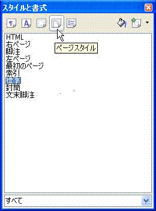
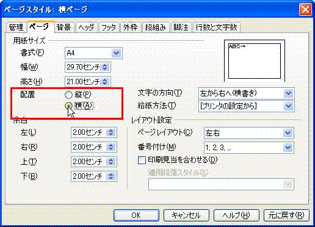

#１ページ目は縦、２ページ目は横にしたい
1. 書式」メニューから「スタイルと書式」をクリックしてください。
2. 「スタイルと書式」というタイトルの小さなウィンドウが開きます。
3. 左上にあるアイコンの4番目「ページスタイル」をクリックして、ページスタイルの表示に切り替えます。

4. 続いて、一番右側にある「選択スタイルから新規作成」というアイコンをクリックします。
5. 「新しいスタイルを選択」という選択メニューが出てきますので、更にそれをクリックします。
6. 「スタイルの作成」ダイアログが開きます。
7. スタイル名の箇所に任意の名前（ここでは『横ページ』とします）を入力し、OKボタンを押します。
8. 「スタイルと書式」ウィンドウに『横ページ』が追加されていますので『横ページ』を選択し、右クリックをして「変更」を押します。
9. 「ページスタイル」というウィンドウが開きますので、そこで「ページ」というタブをクリックします。

10. 用紙サイズを設定する箇所に、「配置」の設定がありますので、そこで【横】を選択します。
11. 次に、「管理」というタブをクリックし、「次に続くスタイル」の箇所のプルダウンメニューで、【標準】を選択し、OKボタンを押します。
ここまでで、新しい「横ページ」のスタイルが完成です。
では、次は実際に、1ページ目を縦、2ページ目を横向きにしてみましょう。
1. 横向きにするページの前のページの一番下にカーソルを移動させます。
2. 「挿入」メニューから「任意区切り」をクリックしてください。
3. 「区切りの挿入」という小さなウィンドウが開きます。
4. 【改ページ】にチェックを入れ、「スタイル」の箇所で先程作成したスタイルの【横ページ】を選択し、OKボタンを押します。
参考サイト：ページスタイルの研究
 例)文字サイズ10.5 40文字×30行の場合
例)文字サイズ10.5 40文字×30行の場合